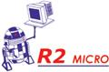
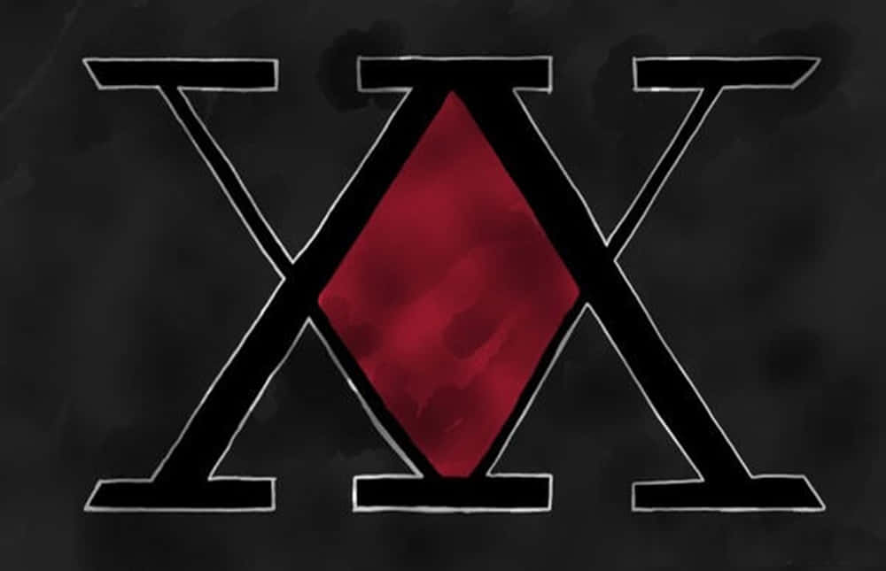
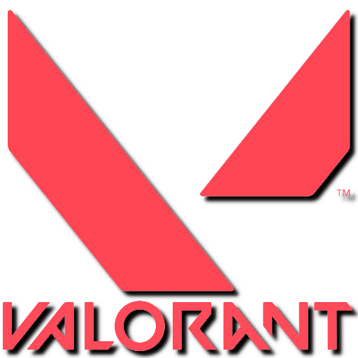
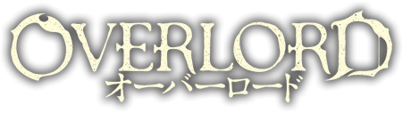

Nom et Prénom : EL MENSI Mehdi
Parcours : BTS SIO SISR
Contexte de réalisation : R2 Micro, Services & conseils en informatique, Mérignac
Période de réalisation : 03/06/2024 - 28/06/2024
Modalité : Individuelle

Lecture : Lofi Relax

Étudiant en BTS SIO – Option SISR

Je suis étudiant en deuxième année de BTS SIO (Services Informatiques aux Organisations), spécialité SISR (Solutions d'Infrastructure, Systèmes et Réseaux) au Lycée Gustave Eiffel de Bordeaux. Passionné par l’informatique et curieux des nouvelles technologies, j’ai naturellement choisi cette voie après l’obtention de mon BAC PRO SN.

Le BTS Services Informatiques aux Organisations (SIO) est un diplôme Bac+2 destiné à former des professionnels de l'informatique. Cette formation permet d’acquérir des compétences en administration des systèmes et réseaux (SISR) ou en développement d’applications (SLAM).
| 🖥️ SISR (Systèmes & Réseaux) | 💻 SLAM (Développement Logiciel) |
|---|---|
| 🔹 Administration des serveurs et réseaux | 🔹 Développement d'applications (Web, mobile, logiciel) |
| 🔹 Sécurité informatique et cybersécurité | 🔹 Bases de données et SQL |
| 🔹 Maintenance et support technique | 🔹 Programmation en divers langages (Java, Python, PHP...) |
| 🔹 Virtualisation et Cloud Computing | 🔹 Gestion de projet en méthode Agile |
| 🎯 Objectif : Administrer et sécuriser les infrastructures IT | 🎯 Objectif : Concevoir, coder et optimiser des logiciels |
Pendant ma formation en option SISR, j’ai acquis des compétences en administration de serveurs, gestion de la sécurité des réseaux et support technique. Mes stages m’ont permis de mettre en pratique ces connaissances dans un environnement professionnel.
Dans le cadre de ma formation en BTS SIO, j’ai eu l’opportunité de réaliser plusieurs stages en entreprise, me permettant d’acquérir une précieuse expérience dans les domaines de l’administration système et des réseaux. Voici un aperçu de mes missions et réalisations !

📅 Durée : 1 mois
🏢 Entreprise : R2Micro
🚀 Missions :
📝 Compétences acquises : Gestion Active Directory, Sécurité réseau, Virtualisation
📅 Durée : 2 mois
🏢 Entreprise : ISI-group
🚀 Missions :
📝 Compétences acquises : Configuration de routeurs/switches, Sécurité réseau, Gestion des tickets

"Le talent n'est pas un don, il est une conquête."
🔴 Gestion des services réseau
DHCP, HTTP (Apache)
🟡 Gestion des systèmes
Windows AD, Linux
🔵 Protection des données
VLAN, TLS, SSH, WinSCP
🟣 Installation & configuration
Besoins, caractéristiques, installation
🔴 Inventaire & déploiement
Inventaire (GLPI), Déploiement, Sauvegarde/Restauration (Cobian)
🟢 Résolution
Démarche ITIL, gestion de tickets (GLPI, iTop), prise en main distant (VNC, RDP)
🔴 Bases de données
MySQL, Access
🟣 Gestion des accès
Définition des données & gestion des droits d’accès (SQL)
🟢 Conformité et sécurité
Bases du RGPD et de la cybersécurité
🔴 Programmation Front-End & Back-End
PHP/MySQL, HTML, CSS, JavaScript
🟣 Programmation événementielle
Visual Studio
🟡 Simulation réseau
Simulation de réseaux et configuration Cisco

"L'information, c'est le pouvoir." - Cypher
Firewall (Pfsense, open vpn) - Windows server 2012 (DHCP, DNS, AD, GPO) - Windows server 2012 2 (redondance) - Serveur web (LAMP (Linux, Apache, Mariadb, PHP), GLPI) - Serveur Base de données (Mariadb) - FreePBX - STA admin (SSH) - Veille technologique
Connexion SSH avec interface visuelle via Xming et X1. Connexion et prise en main à distance avec Rust Desk
Analyse des services proposés par l’entreprise sur le site web et sa visibilité.

Nom et Prénom : EL MENSI Mehdi
Parcours : BTS SIO SISR
Contexte de réalisation : R2 Micro, Services & conseils en informatique, Mérignac
Période de réalisation : 03/06/2024 - 28/06/2024
Modalité : Individuelle
L'objectif principal de cette veille est d'identifier et d'analyser les composants matériels et logiciels critiques pour les infrastructures informatiques en entreprise. Cette veille permet de choisir les équipements optimaux pour chaque situation en entreprise et de conseiller les clients sur les ressources nécessaires et optimales à intégrer dans leurs locaux.